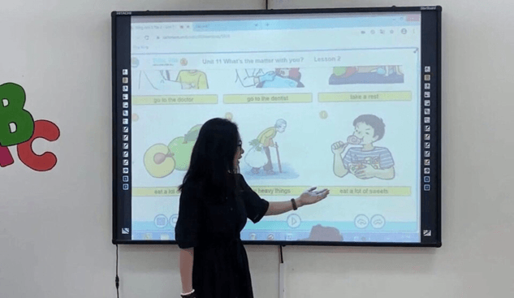
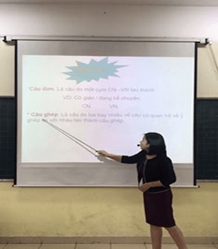
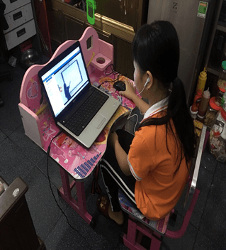
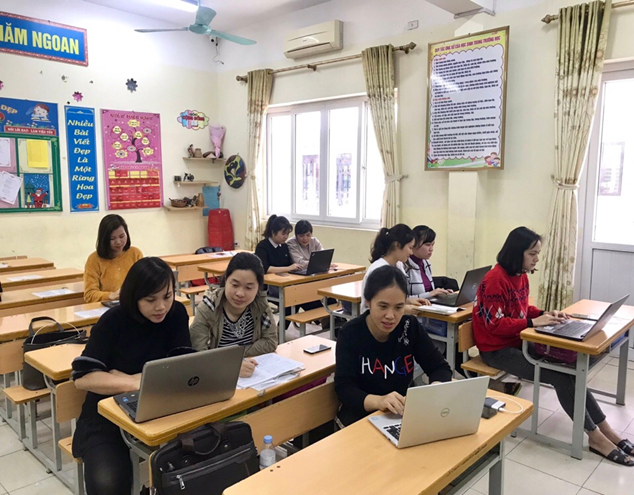
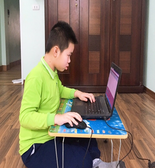
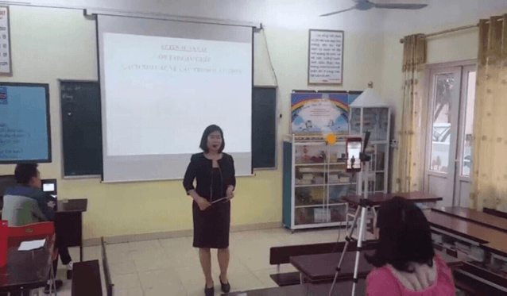
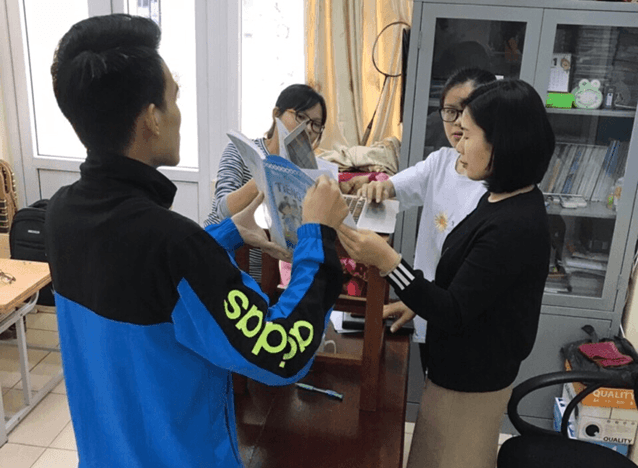
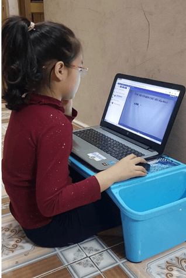
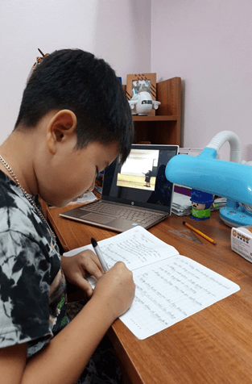

Chuyện về những giờ học đặc biệt của thầy và trò trường Tiểu học Đình Bảng 2
Thời điểm hơn 2 tháng trước đây thầy và trò trường Tiểu học Đình Bảng 2 vẫn hằng ngày quen với nề nếp đến trường, với phấn trắng bảng đen, với những giờ truy bài, với những tiết học say sưa…. Thì trong thời gian vừa qua khi mà cả cộng đồng đang chung tay phòng chống đẩy lùi dịch bệnh Covid - 19 thay vì phấn trắng, bảng đen thầy và trò trường Tiểu học Đình Bảng 2 với những chiếc laptop, điện thoại smastphone đã có những giờ học đặc biệt mà từ trước tới nay chưa từng có.
Nhằm tăng cường các biện pháp phòng, chống dịch Covid-19 và tổ chức các hoạt động chuyên môn trong thời gian học sinh nghỉ học tạm thời, trường Tiểu học Đình Bảng 2 tích cực ứng dụng công nghệ thông tin trong dạy học cho học sinh từ xa. Với sự nhiệt huyết, tình yêu nghề các giáo viên trong trường đã tích cực tập huấn, say sưa chuẩn bị bài, tổ chức daỵ học trực tuyến.
Để công tác chuyên môn được thường xuyên, học sinh không bị gián đoạn kiến thức khi quay trở lại trường, nhà trường đã chỉ đạo tổ chức tập huấn, trao đổi kinh nghiệm về kỹ thuật dạy học trực tuyến cho 100% giáo viên trong nhà trường; chỉ đạo các tổ, nhóm chuyên môn và các giáo viên bên cạnh việc tổ chức, hướng dẫn học sinh học, ôn tập, giải đáp thông qua các nền tảng công nghệ thông tin như Zalo, Facebook, Messenger, thư điện tử,…VNPT E-learning,…
Ban đầu việc triển khai dạy học trực tuyến gặp nhiều khó khăn do một số phụ huynh chưa có điện thoại thông minh và đa phần học sinh chưa được sử dụng các thiết bị công nghệ thông tin tại nhà khi không có phụ huynh quản lý,…Tuy nhiên, các thầy cô giáo đã cố gắng khắc phục mọi khó khăn, cùng nhau tìm các giải pháp thực hiện có hiệu quả. Nhờ sự cố gắng miệt mài ngày đêm của các thầy cô giáo, đặc biệt là sự quan tâm động viên từ phía ban lãnh đạo nhà trường, từ phía phụ huynh học sinh. Mặc dù tạm thời đang trong thời gian nghỉ để phòng chống dịch bệnh Covid-19 nhưng thầy và trò trường Tiểu học Đình Bảng 2 vẫn có những giờ học tích cực, sôi nổi, ngập tràn niềm vui và hạnh phúc.
Đến nay, các thầy cô đã rất thành thạo trong việc tổ chức lớp học trực tuyến, nhiều thầy cô có kỹ năng kết hợp nhiều ứng dụng khác nhau để làm bài học thêm phong phú, hiệu quả cao. Với hình thức dạy học trực tuyến, thầy cô có thể truyền đạt, trao đổi kiến thức với tất cả các học sinh như trong lớp học, điều đó khiến học sinh rất hứng thú, tích cực tham gia; phụ huynh cũng cảm thấy rất yên tâm khi các con nghỉ nhưng vẫn được tham gia học tập dưới sự hướng dẫn của các thầy cô giáo. Từ khi ứng dụng dạy học được triển khai 100% các thầy cô thường xuyên chuyển bài, nhận bài, nhận xét đánh giá việc học của học sinh qua nhóm zalo của phụ huynh.
Trước tình hình dịch bệnh vẫn đang có những diễn biến phức tạp. Tuy nhiên điều đó cũng không làm ảnh hưởng đến tinh thần giảng dạy và học tập của thầy trò trường Tiểu học Đình Bảng 2. Cả thầy và trò vẫn ngày đêm tích cực miệt mài với những giờ học trực tuyến mới mục đích vừa đảm bảo an toàn sức khỏe cho các em, cùng cả xã hội phòng chống dịch bệnh vừa duy trì chất lượng dạy và học của nhà trường.
Một số hình ảnh trong các giờ học trực tuyến:






